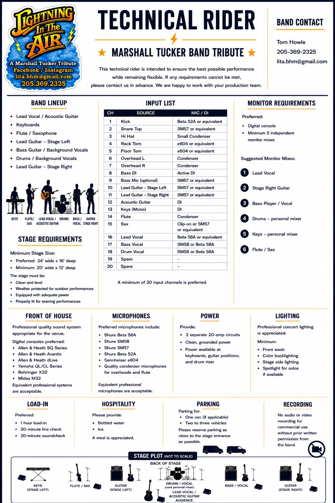

Electronic press kit
Everything a buyer needs.
Bio, video, repertoire, recommendation, technical rider, press downloads, and direct booking contact.
Official bio
Authentic sound. Live energy.
Lightning in the Air is a high-energy Marshall Tucker Band tribute based in Alabama, dedicated to preserving the sound and spirit of one of Southern rock’s most iconic bands.
Featuring experienced musicians and a passion for authentic performance, the band faithfully recreates classics including “Can’t You See,” “Heard It in a Love Song,” “Fire on the Mountain,” and many more.
The show captures the signature blend of Southern rock, country, blues, and jazz with exceptional musicianship, strong vocals, and audience-favorite songs. It is designed for festivals, theaters, casinos, clubs, community events, fairs, concert series, and private events.

Official promo reel
See the show.
A promoter-friendly overview of the band’s sound and stage presence.
Presenter recommendation
“They faithfully capture the sound, spirit, and energy of those classic songs that so many of us know by heart.”Greg Stone · Executive Director, Shelby County Arts Council
Current repertoire
The songs fans came to hear.
The set combines major hits, album favorites, and room for the jams that make this music breathe.
- Take the Highway
- This Old Cowboy
- Searchin’ for a Rainbow
- In My Own Way
- Fire on the Mountain
- Dream Lover
- Cattle Drive
- Ramblin’
- I’ll Be Loving You
- Heard It in a Love Song
- Bob Away My Blues
- 24 Hours at a Time
- Never Started Loving You
- Tell It to the Devil
- Running Like the Wind
- Can’t You See

Production information
Technical rider & stage plot.
The supplied rider covers the seven-person lineup, input list, monitor mixes, stage dimensions, front-of-house needs, power, lighting, load-in, hospitality, parking, and recording policy.
Preferred stage size is 24 feet wide by 16 feet deep, with a minimum of 20 feet wide by 12 feet deep. The band prefers a digital console and a minimum of 20 input channels.
{kind=link}
{kind=link}
{kind=link}